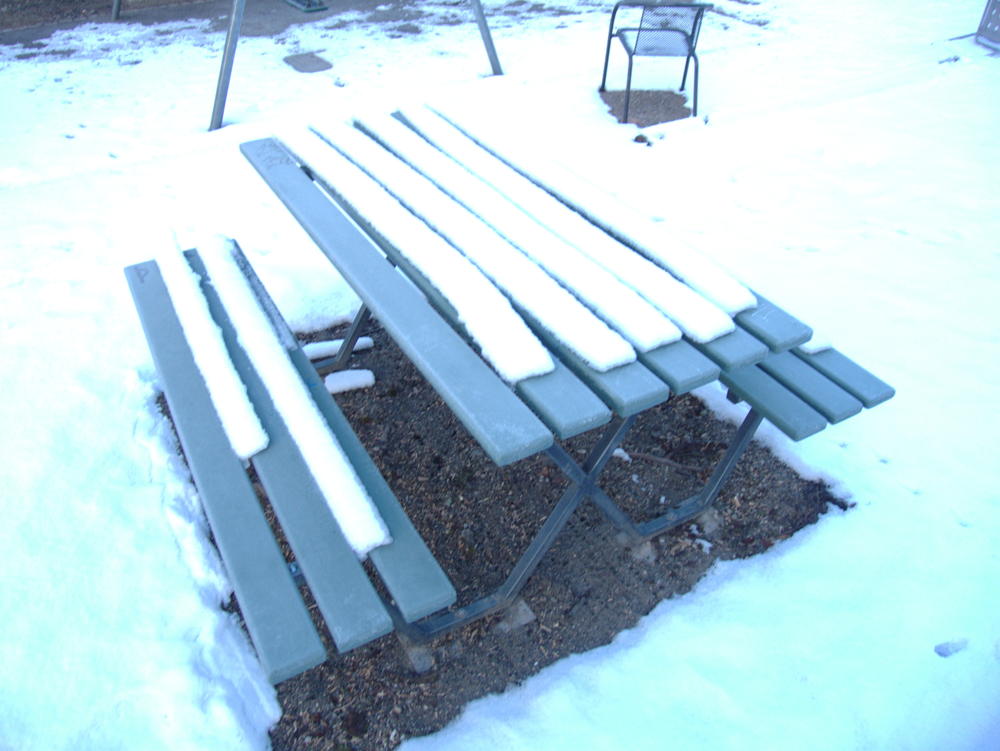
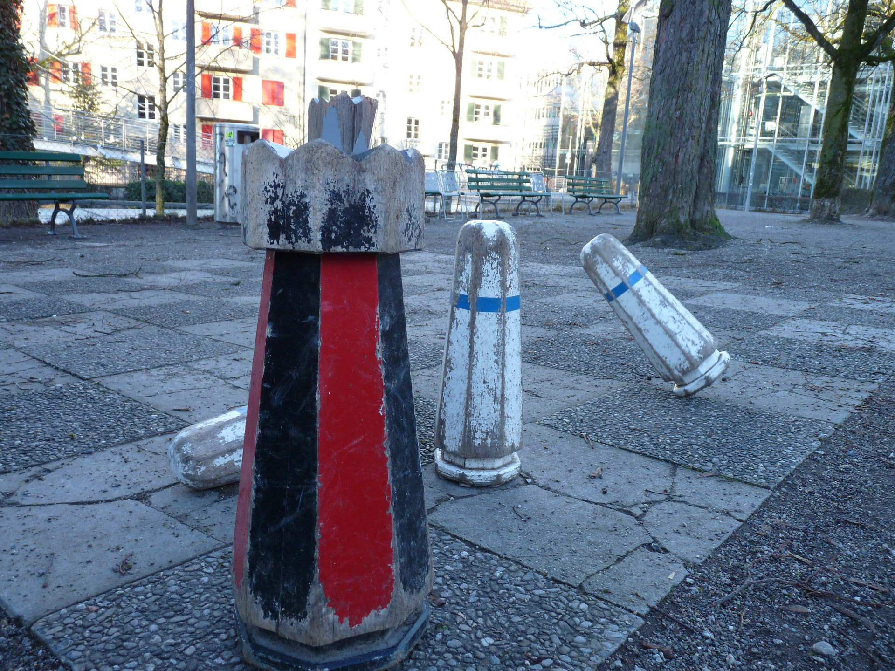
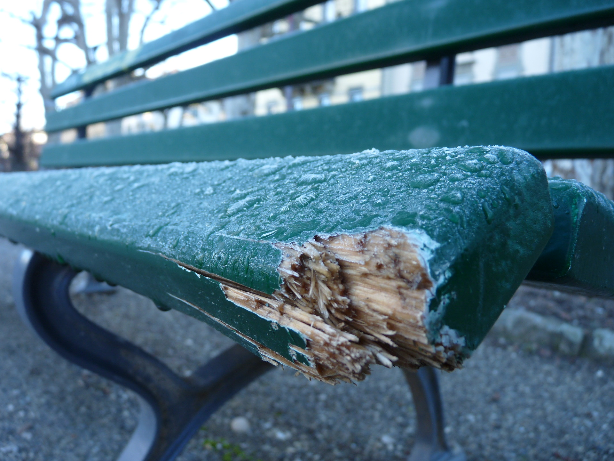
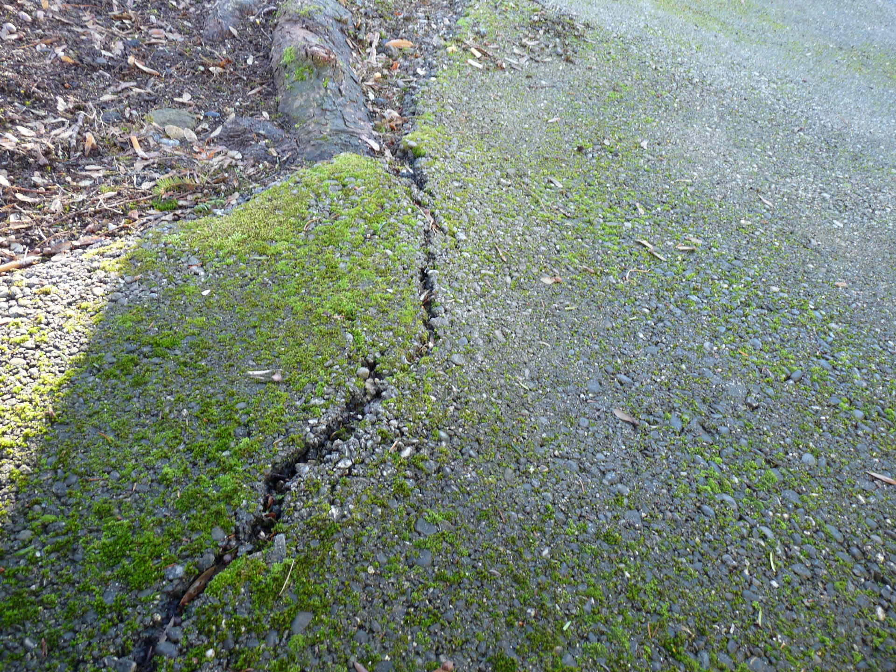

Dokumente
Fotopirsch 1
Das Bild ist an sich nicht schlecht. Der Fokus hätte aber noch ein bisschen besser gesetzt werden können.
Dieses Bild ist mir sehr gut gelungen. Der Fokus passt und das Objekt ist klar erkennbar.

Dieses Bild ist aus meiner Sicht stimmig. Jedoch ist das Objekt nicht klar definiert. Es könnte der Kamin aber auch der Baum sein.

Fotopirsch 2
Dieses Bild ist mir gut gelungen. Der Fokus ist klar auf dem König und die gekippte Figur gibt dem Bild den nötigen Pep.
Dieses Bild ist insgesamt sehr stimmig. Der Fokus liegt auf dem morschen Holz und das Eis definiert den Hintergrund.
Dieses Bild ist aus meiner Sicht nicht schlecht. Jedoch fliessen das Objekt und der Hintergrund ineinander.
